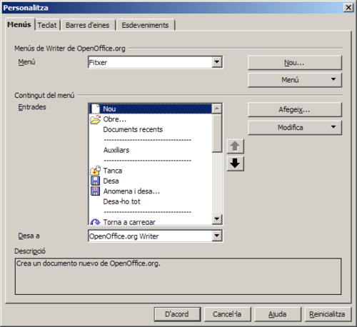
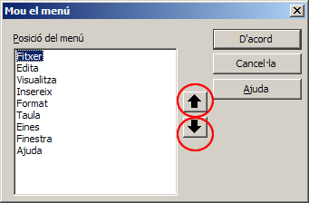

UF3. Processadors de text
Pràctica 8 - Exercici 3
Els menús del LibreOffice Writer
A través de l'opció de menú Eines | Personalitza | Menús, el LibreOffice Writer permet personalitzar les opcions dels menús, modificar-los, eliminar-los o afegir-ne de nous.

Modificar menús
Les opcions que podeu utilitzar, un cop haureu demanat Eines | Personalitza | Menús, són les següents:
- Botó Menú / Mou:
- Permet establir l'ordre en què es mostren els menús a la barra de menús del programa.
- Les fletxes de la finestra Mou el menú us permetrà situar el menú en la posició desitjada.

- Botó Menú / Reanomena: permet canviar el nom d'un menú personalitzat (els predeterminats del programa no es poden reanomenar).
- Botó Menú / Suprimeix: permet eliminar un menú personal (els predeterminats del programa no es poden eliminar).
- Botó Modifica:
- Afegeix un submenú: permet crear un submenú del menú que s'està modificant. Posteriorment, se li poden afegir ordres al submenú.
- Comença un grup: afegeix una línia horitzontal per poder diferenciar els diferents blocs d'ordres.
- Reanomena: permet canviar el nom de l'ordre de l'entrada del menú que s'hagi assenyalat.
- Suprimeix: permet eliminar una ordre del menú.
- Botó Afegeix: permet afegir ordres al menú, tant si el menú és predeterminat del programa com si es tracta d'un menú personalitzat.
Crear menús personalitzats
Des de l'opció de menú Eines | Personalitza | Menús, es poden crear menús personalitzats. Per crear un menú cal realitzar un seguit de passos. Podeu experimentar-los realitzant la pràctica que us proposem a continuació:
- Obriu el LibreOffice Writer.
- Deseu el document en blanc que s'ha generat a la vostra carpeta de treball amb el nom menús personalitzats.
- Demaneu Eines | Personalitza | Menús.
- Molt important: desplegueu Desa a i escolliu Menú personalitzat.odt. En cas contrari, el menú es crearia en la plantilla predeterminada de l'LibreOffice i no en el document actual.
- Premeu el botó Nou.
- Escriviu Personal 1 a la casella corresponent a Nom del menú.
- Amb ajut de les fletxes de desplaçament, situeu el menú a l'antepenúltima posició respecte de la resta de menús. En aquest cas, només cal prémer dos cops la fletxa amunt.
- Premeu el botó D'acord.
- Premeu el botó Afegeix.
- De la categoria Edita, cerqueu i afegiu amb el botó Afegeix les ordres Copia, Retalla i Enganxa.
- De la categoria Formata, cerqueu i afegiu amb el botó Afegeix les ordres Negreta, Cursiva, Subratllat i Subratllat doble.
- Premeu el botó Tanca.
- Separeu les eines en dos grups diferenciats.
- Assenyaleu l'eina Enganxa.
- Premeu el botó Modifica i, de les opcions que hi apareixeran, premeu sobre Comença un grup.
- Afegiu un submenú al final de la llista d'ordres del menú.
- Assenyaleu l'ordre Subratllat doble.
- Premeu el botó Modifica i, de les opcions, premeu sobre Afegeix un submenú.
- Entreu el nom del submenú, Altres opcions per exemple, i premeu D'acord.
- Afegiu ordres al submenú que heu creat.
- Desplegueu la llista Menú (a la part superior de la finestra Menús) i escolliu Personal 1 | Altres opcions.
- Amb el botó Afegeix, de forma similar a l'explicada abans, afegiu les ordres Ombra i Ressaltat corresponents a la categoria Formata.
- Premeu el botó D'acord de la finestra Personalitza per desar els canvis al document en pantalla.
- Demaneu Fitxer | Desa per enregistrar els últims canvis del document.
- Sortiu de l'LibreOffice.ort Writer i torneu-lo a activar.
- Trobem el menú personalitzat en el document en blanc?
- Sense sortir del programa, demaneu Fitxer | Obre i recupereu el fitxer menús personalitzats.
- S'hi veu el menú personalitzat?
- Tanqueu tots els documents i sortiu del programa.

|
|

|
|